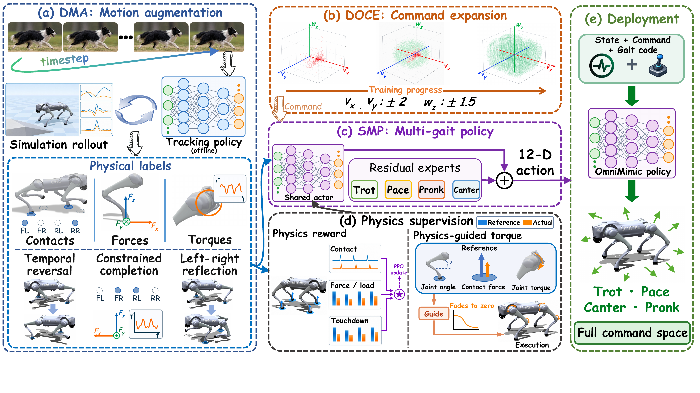

01 DMA
Dynamics-completed
Motion Augmentation
Time reversal and sagittal reflection extend the motion directions. Constrained dynamics completion supplies contact-force and torque labels for training-only physical supervision.
Animal demonstrations → real-world locomotion
One policy. Four gait styles. Forward, backward, lateral, and turning motion.
Real-world deployment
Simulation-trained policy, deployed directly on the real robot without fine-tuning.
Real-time playback (1×). Shorter clips hold their final frame.
Overview
Animal demonstrations provide natural, distinctive gait styles, but their narrow directional coverage leaves little style-consistent supervision for backward, lateral, and turning commands.
OmniMimic combines temporal reversal, constrained dynamics completion, and sagittal reflection to construct robot-specific motion and physical supervision beyond the observed directions. A demonstration-guided curriculum progressively expands the command distribution, while a shared actor and softly mixed residual experts learn a single policy for four gaits.
The deployed actor uses robot state, commands, and gait code—without reference motions, physical labels, or guidance torques.
Lower command-tracking RMSE
Uniform Cartesian command gridLower foot-position RMSE
Forward and backward reference velocitiesFour-gait mean relative to the matched APEX baseline.
These numbers describe simulation evaluations, not the real-world videos.The framework

Time reversal and sagittal reflection extend the motion directions. Constrained dynamics completion supplies contact-force and torque labels for training-only physical supervision.
Training begins near the demonstrated velocities, then progressively expands toward the target command ranges for forward, lateral, and yaw motion.
A shared actor produces the complete action. A gait-conditioned soft gate mixes bounded residual corrections, preserving distinct styles within one policy.
More real-world demos
Additional indoor and outdoor recordings.
Original playback speed, without fine-tuning.
Forward locomotion with four distinct styles.
Multi-gait deployment on paved ground.
Stone paving · includes backward Canter.
Forward motion on stone paving.
Forward motion · sequence 1.
Grass · backward Pace, then forward Canter.
Forward locomotion on grass.
Forward motion on grass · sequence 2.